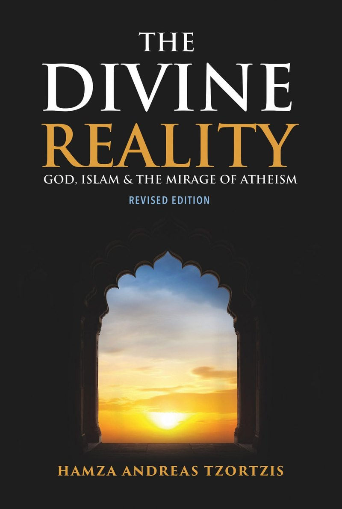
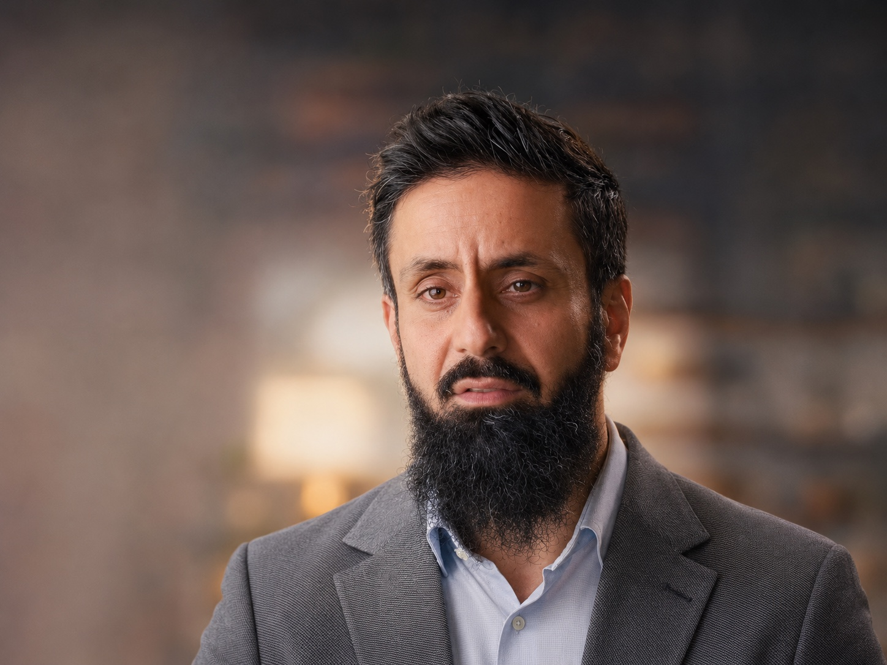
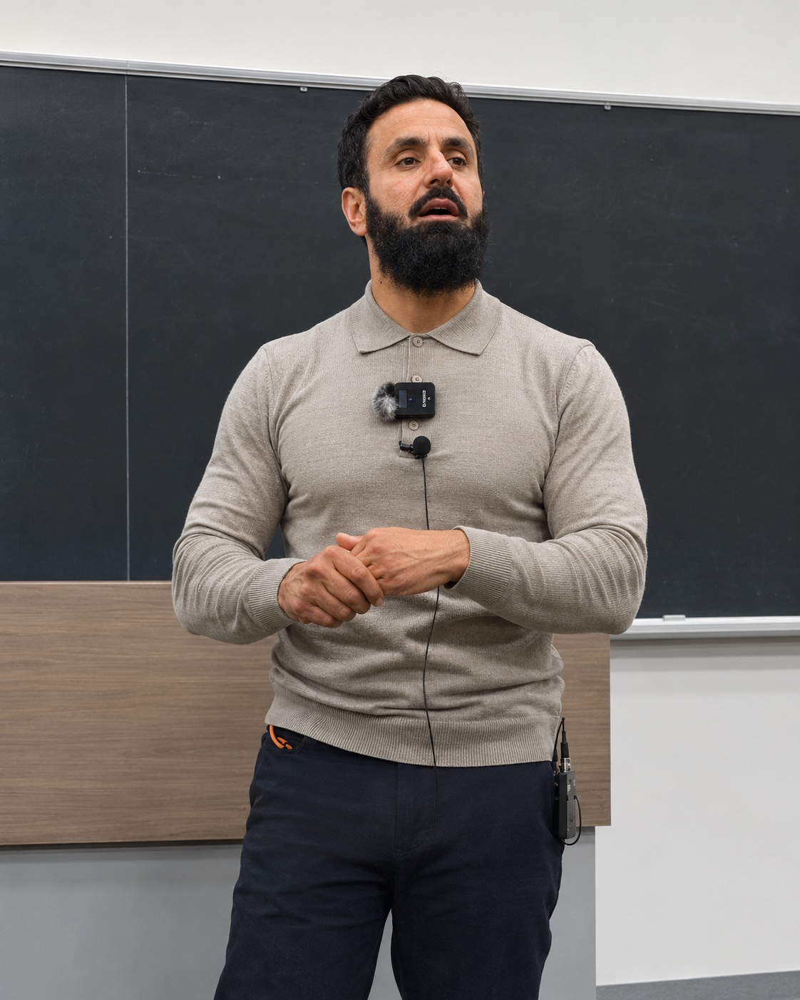
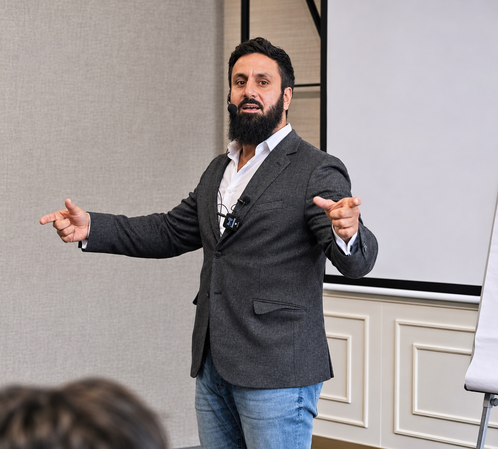
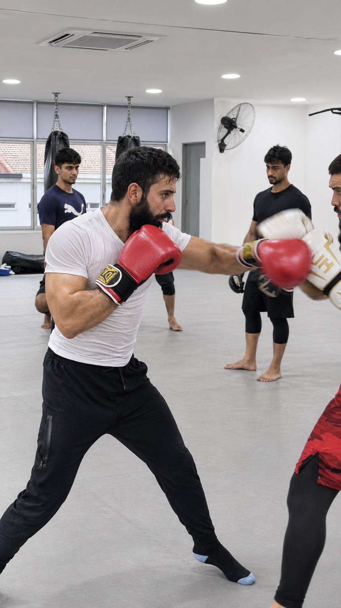
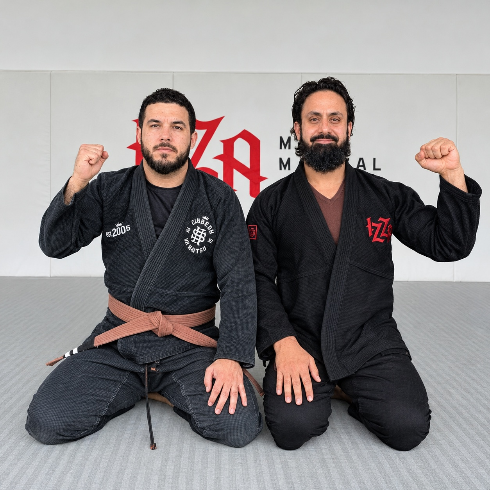

Current book
The Divine Reality
God, Islam & the Mirage of Atheism
An existential, spiritual and rational journey through the arguments for God, the Qur’an and the prophethood of Muhammad ﷺ.
Author / Educator / Founder / Practitioner
He writes and teaches about God, the Qur’an, and what it means to be human — through reason, reflection and lived discipline.

Ideas are tested in public, refined in conversation and grounded through discipline.



01
Essays and longer pieces on faith, reason and the questions that shape a life.
02
Published works exploring God, Islam and the questions of modernity.

Current book
God, Islam & the Mirage of Atheism
An existential, spiritual and rational journey through the arguments for God, the Qur’an and the prophethood of Muhammad ﷺ.
Cover and publication details to confirm.
Concept only; title and contents to confirm.
03
Selected lectures, conversations and debates — arranged as an editorial programme.
04
Institutes and initiatives supporting serious inquiry, learning and practice.
Practice & discipline
Brazilian Jiu-Jitsu is not set apart from the work; it is the same discipline worn on the body — pressure, patience and the honesty of a position that either holds or does not.
More in About
05
Hamza Andreas Tzortzis is an author, public educator and researcher on Islam, God and the meaning of human life. He is the founder and director of Sapience Institute, and the author of The Divine Reality.
Read the full biography